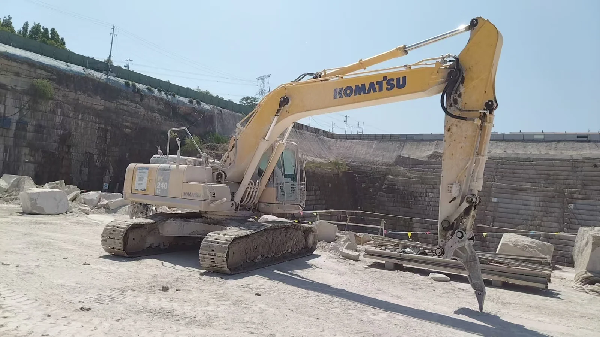
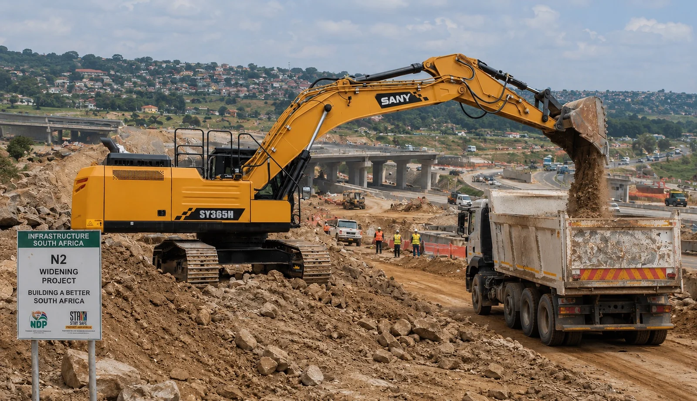

Example model
Komatsu PC240 class excavator
Condition, serial number, hours, undercarriage, hydraulics, engine evidence and export readiness should be checked before purchase.
Used Construction Machinery
For used equipment, model, year and price are only the start. HONVAX focuses on availability, identifiable condition evidence, operating hours, key systems and practical export readiness.
EXAMPLE EQUIPMENT TYPES
Actual stock changes frequently. Website examples illustrate the type of equipment that can be investigated and do not guarantee current availability.

Example model
Condition, serial number, hours, undercarriage, hydraulics, engine evidence and export readiness should be checked before purchase.

Example model
Availability, year, hours and supporting evidence must be confirmed for the actual machine offered.
01
Brand, exact model, serial number, year and machine location.
02
Photos, video, cold start, leaks, smoke, structural condition and undercarriage.
03
Engine, hydraulics, pumps, cylinders, controls and visible faults.
04
Availability, loading, export documentation, freight, duties and delivery basis.
Send the model, preferred year range, budget, destination and required delivery timing.